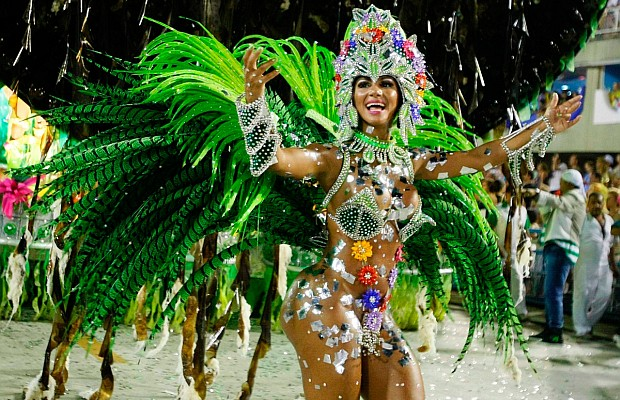
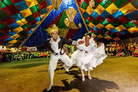
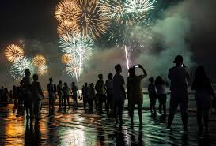

Carnaval de Río
La fiesta más famosa de Brasil, llena de desfiles y alegría.

Conoce las celebraciones más importantes del país.
Las fiestas de Brasil son importantes para la cultura del país y reflejan la diversidad y la riqueza de cada estado. Muchas de ellas combinan influencias indígenas, africanas y europeas. Son un aspecto fundamental de la historia brasileña.
La fiesta más famosa de Brasil, llena de desfiles y alegría.

Tradición popular con bailes, música y comidas típicas.

Celebración en las playas con fuegos artificiales.
